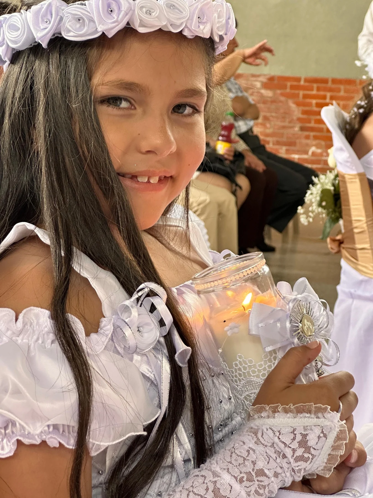
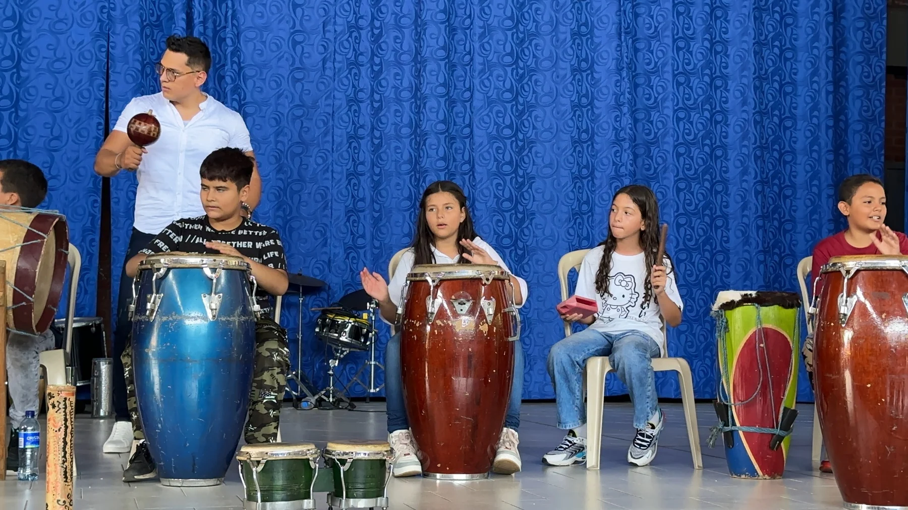

Volleyball
Juliana would love the opportunity to keep playing volleyball in high school and join her school’s team.
Application to Merion Mercy AcademyClass of 2031
Juliana comes from Colombia, a beautiful Latin American country and the land of magical realism. She began her education at Ciudadela Educativa La Presentación, a Catholic school run by Dominican sisters in Cali, where she completed grades 1 through 5.
We then moved to Philadelphia, where Juliana attended James G. Blaine School for sixth and seventh grade.
She is now in eighth grade at Spring Garden School in Philadelphia. Her story brings together faith, service, public speaking, and a desire to keep learning through sports.
She dreams of returning to a Catholic school where she can receive a quality education rooted in her faith. She looks ahead to a life of faith and communion, with the conviction that she will attend a great university.
That is why we have taken the time to share a little of her story. We hope these brief moments and memories help you get to know her purpose, her dreams, and the young woman she has become.


Her education in Colombia brought together academic learning, faith, and care for others.
Ciudadela Educativa
La Presentación
Blaine School → Spring Garden School
La Presentación follows the legacy of Marie Poussepin, founder of the Dominican Sisters of Charity of the Presentation. The Cali school grew from the vision of Sister Teresa María Acosta Penagos.
School historyFrom first grade to today. Explore the memories from each stage.
Juliana would love the opportunity to keep playing volleyball in high school and join her school’s team.
High School · 2027–2031
Thank you for taking the time to get to know her.
Open printable PDF